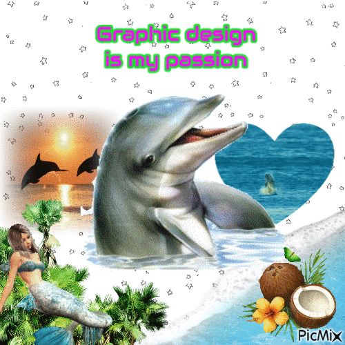
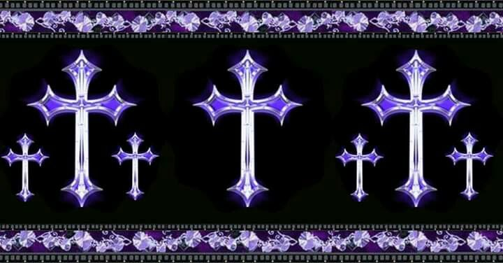
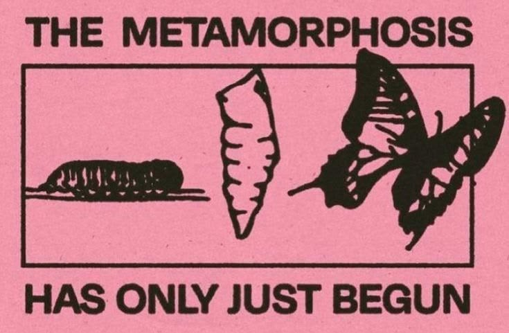

Camis' carnet
"Watch me take my steps, my journey may be short and sweet"

"Watch me take my steps, my journey may be short and sweet"


Adquirir conocimientos sobre distintos temas, leer libros/comics, películas/series/anime, jugar videojuegos, el horror, recorrer museos y muestras artísticas, reparación de computadoras, electrónica, netArt, espiritualiudad/tarot, tecnología, historia del arte, escritura, análisis de obras, edición de imágenes/videos, estéticas de internet, tecnología retro, crear personajes e historias de origen propia, crochet y manualidades
Diseño, electrónica, interactividad


Crear un portfolio, aprender más cosas relacionadas a la multimedia, diseño interactivo y electrónica, conseguir trabajo freelance, participar en proyectos creativos colaborativos de mi interés